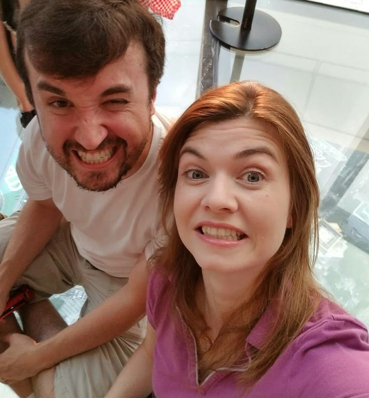

✦ . ⁺ . ✦ . ⁺ . ✦. ⁺ . ✦. ⁺ . ✦. ⁺ . ✦
Introdução . . .
Meu nome é Guilherme Oliveira lima , eu tenho 15 anos e sou aluno da EEEP Jeová Costa Lima. Eu sempre vivi de forma muito solitária e introvertida. Eu gostava muito de assistir desenhos animados, viajar e fazer várias coisas. Mais tarde, eu desenvolvi interesse por psicoogia, estudando comportamentos, a sociedade e principalmente psicanálise. Por isso pretendo fazer faculdade de psicologia e alguns cursos adicionais ( de psicologia e informática também).
Área profissional . . .
Eu escolhi o curso de informática porque quero ter mais experiência no trabalho, aprender sobre design e outras linguagens de programação. Mas, na verdade, eu sempre tive interesse pela tecnologia. E esse interesse começou desde muito cedo, quando eu gostava de jogar , ver reviews de aparelhos eletrônicos e como eles influenciam a nossa vida. Entretanto , maior parte do meu contato com a tecnologia foi ver meu pai trabalhando com design gráfico, o que por parte fez eu também gostar dessa área.ㅤㅤㅤㅤㅤㅤㅤㅤㅤㅤ
obrigado por isso, Coisa de Nerd 𖹭
Te amo Nilceㅤㅤㅤㅤㅤㅤㅤㅤ

Atualmente, eu tenho experiência com PHP, Python, Portugol, HTML, CSS e um pouco de JS. Atualmente estou aprendendo sobre Portugol, HTML e CSS. ㅤㅤㅤㅤㅤㅤㅤㅤㅤㅤㅤㅤㅤㅤㅤㅤㅤㅤㅤㅤㅤㅤㅤㅤㅤㅤㅤㅤㅤㅤ ㅤㅤㅤㅤㅤMas no fim, so um tem meu coração Essas são as ferramentas que eu utilizo para programar ! Futuramente, eu pretendo muito ser um psicologo, melhor bruxo da sonserina, o semideus capaz de segurar o monte olimpo por mais tempo que Anabeth Chase, o agente que vai tirar todos os rituais do Kian, o viajante que vai viajar por todas as nações de Teyvat, o maior mestre pokémon e por fim (mas não menos importante) o que vai tirar nota 10 no trabalho de html.